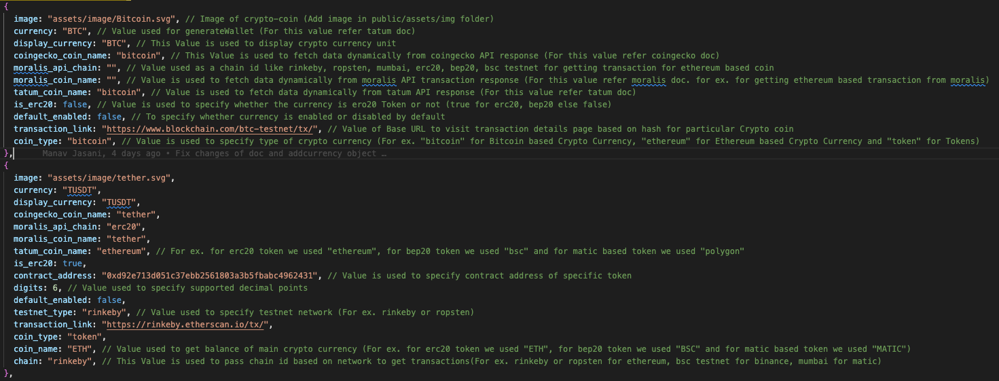
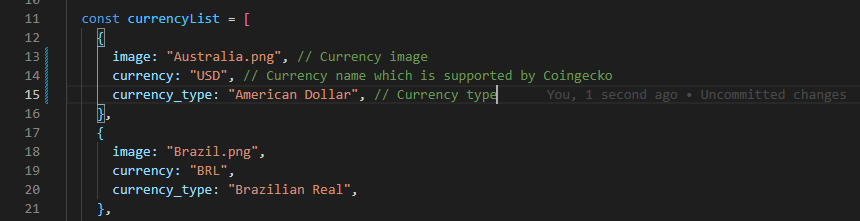

Ready to use Crypto Currency Web Wallet - React JS Setup Guide
Ready to use Crypto Currency Web Wallet is a Crypto currency wallet based webapp, in which you create
your wallet, add/customise currency, do transactions, view balance & charts and much more. It comes with a slick
design and modern look, all the necessary screens to
build a crypto wallet based webapp.
With easily customizable options, you could make the app look as per your taste and requirement in just a few steps.
Technology Used
This system uses single technology to give the best possible experience.
Ready to use Features
- Welcome: A slick welcome screen to kick off your crypto web app
- Authentication: Have your users authenticated with a few steps
- Wallet: Create/Get wallet from mnemonic
- Dashboard: View Revenue charts, currency balance and total portfolio balance
- Portfolio: Detail of your portfolio currency
- Wallets: Customizable time charts, balances and transactions of currency
- Restore Wallet: Restore your wallet from mnemonic words
- History: Transactions of all currency
- Security Backup: Backup your mnemonic words
- Settings: Restore wallet, Change theme and currency
- Account Support: Inquiry for your query related to wallet
- Currency conversion: Change Fiat currnecy to your desired currencies
Key Features
- Built with React JS 17.0.2
- Well-crafted components
- Easy to customise
- Includes basic redux-toolkit setup
- Welcome
- Login
- Sign Up
- Dashboard
- Add Currency
- Portfolio
- Wallets
- Change Currency
- Restore Wallet
- History
- Security Backup
- Settings
- Account Support
What you get in package
- Source Code in ReactJs
- Project Documentation
Change logs
Installation Guide
We tried our best to make the installation of the system as easy as possible.
Project configuration
To add Crypto currency in app:
Go to src -> constantsData -> addCurrency.js
Add your desired currency object as displayed in the image:
To add Fiat currency in app:
To find which currencies are supported by Coingecko API:
https://api.coingecko.com/api/v3/simple/supported_vs_currencies
To add currency, go to src -> pages -> Currency -> index.js
Add your desired currency object as displayed in the image: 
FAQs
-
How to remove CORS error?
-
When we use the testnet environment, it has a limit of max 5 api per
second. So suppose you have added 6 currencies, the webapp will try to
call the APIs 6 times, resulting in an error. So we suggest using 5
currencies or less (For any similar scenario, consider calling 5 or
less API per second to avoid the error) in the testnet environment.
-
How to remove "Failed error: not found: python2" error?
-
If you find below error in your project :

Please double check your NodeJs version, it must be >=12.19.0 and <=14.18.1.
-
Notes
-
This web app uses backend services like Tatum, Moralis and Coingecko. You’ll be able to use them free of
charge for
‘testnet’ development.
For ‘livenet’, Tatum and Moralis are chargeable services as per requirements.
The webapp doesn’t include those charges. You’ll require to buy those services separately.
-
You don't need to host your own nodes for different currencies. We are using Services like Tatum &
Moralis,
so you don't
need to worry about backend servers.
-
Supported Coins: BTC, LTC, ETH, BSC, MATIC
-
Supported Tokens: ERC20, BEP20, MATIC
-
We use Coingecko for Chart, Market change rate and Price information.
-
We use Tatum for Balance and Transfers.
-
Transaction Info :